Thonny Installation Guide for macOS
Introduction
This guide will take you through the step-by-step process of installing Thonny, a user-friendly Python IDE, on your macOS system. Thonny simplifies Python programming and is ideal for learners and developers alike.
Prerequisites
Before you start, make sure you have the following:
- A macOS computer.
- An active internet connection.
- Adequate disk space for the installation.
Installation Steps
1. Visit Thonny’s Official Website
Go to https://www.thonny.org/ to access Thonny’s official download page.
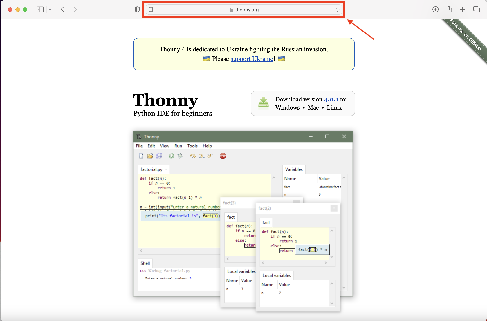
2. Select the macOS Download Option
Hover your cursor over the “Mac” option in the “Download version…” box and click to initiate the download.
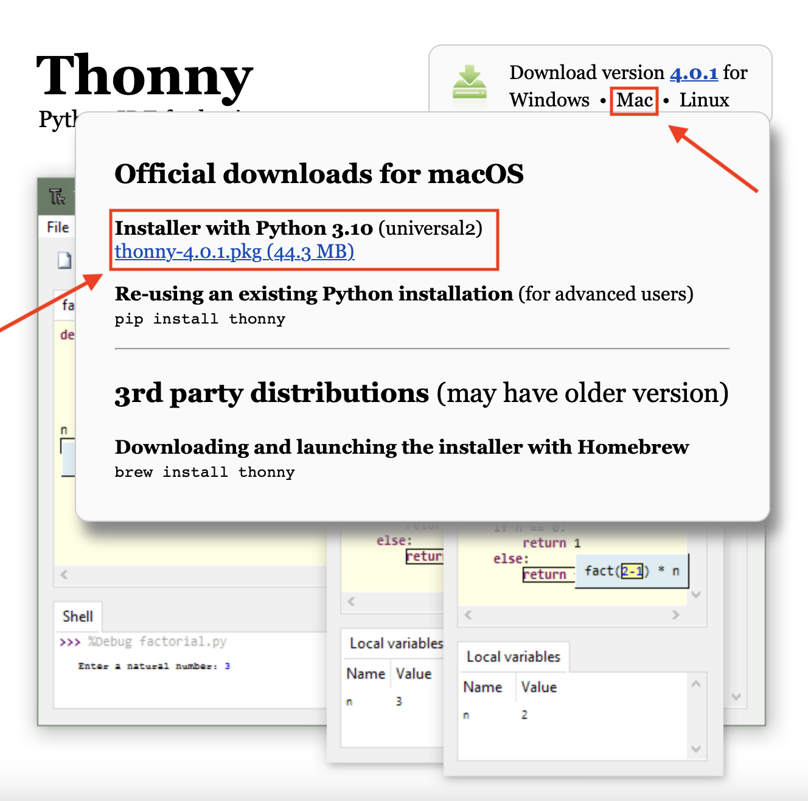
3. Execute the Installer
Locate the downloaded file, typically in your “Downloads” folder. Double-click the Thonny installer and click “Allow” if prompted.
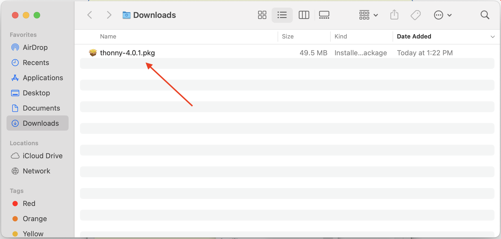
4. Confirm Installation
Follow the on-screen instructions. Click “Continue” and agree to the license agreements.
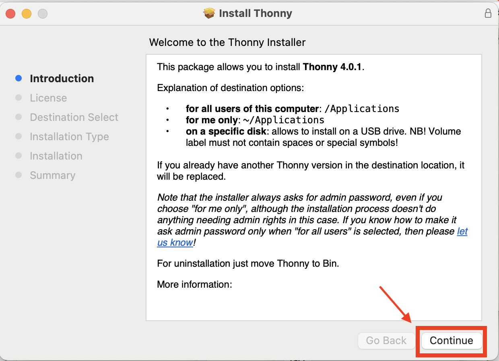
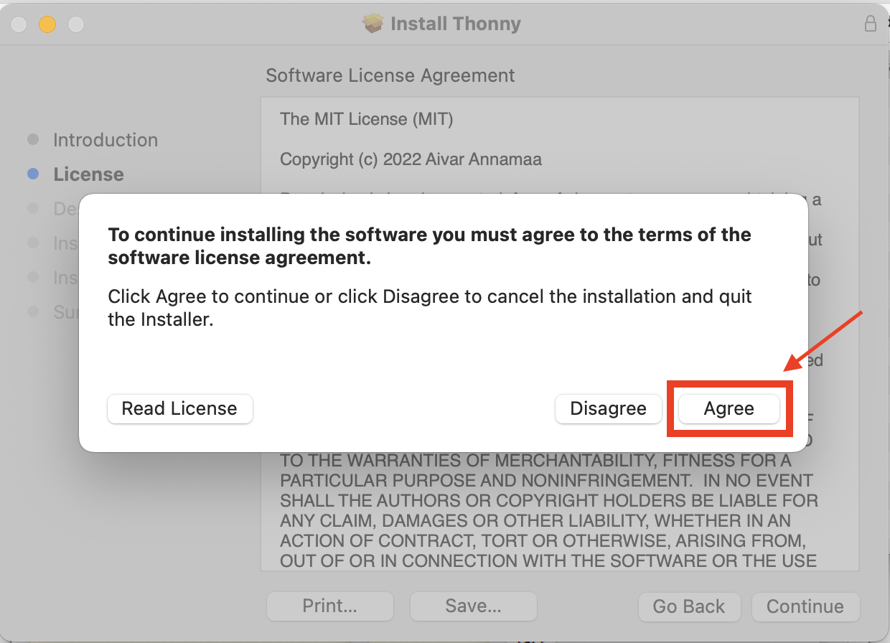
5. Choose Installation Destination
Select a destination for installation; the default option is acceptable.
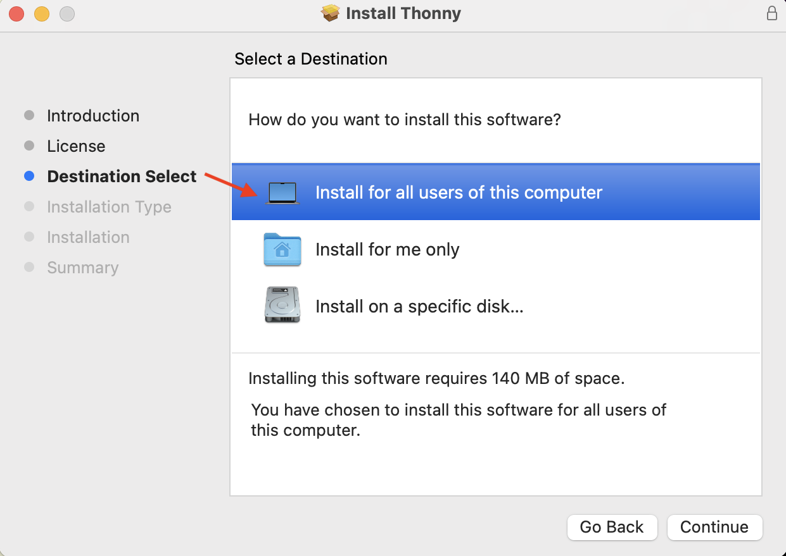
6. Initiate Installation
Click “Install” and allow the installation process to complete.
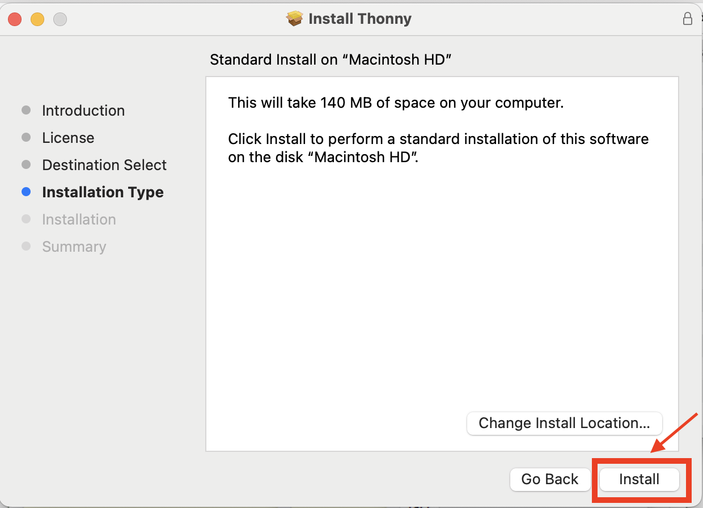
7. Grant Folder Access
If necessary, click “OK” to allow the installer access to folders.
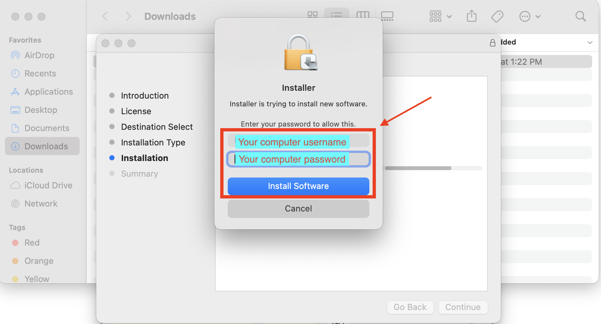
8. Completion Confirmation
Click “Close” to finalize the installation.
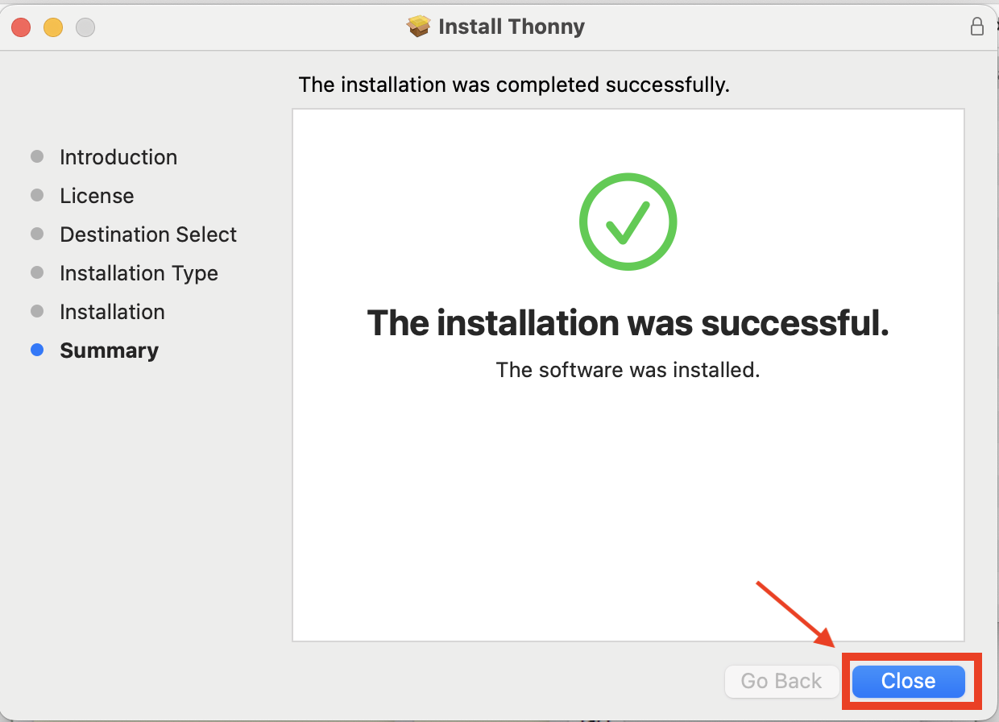
9. Optional Cleanup
Consider moving the installer file to the trash if desired.
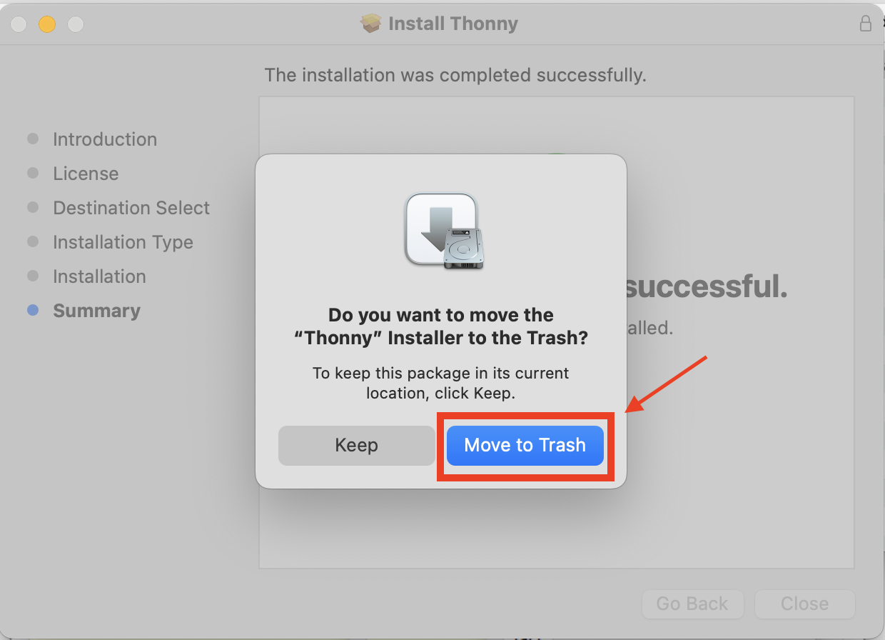
10. Launch Thonny
Thonny is now installed on your computer. Open the Thonny editor by clicking on its icon.
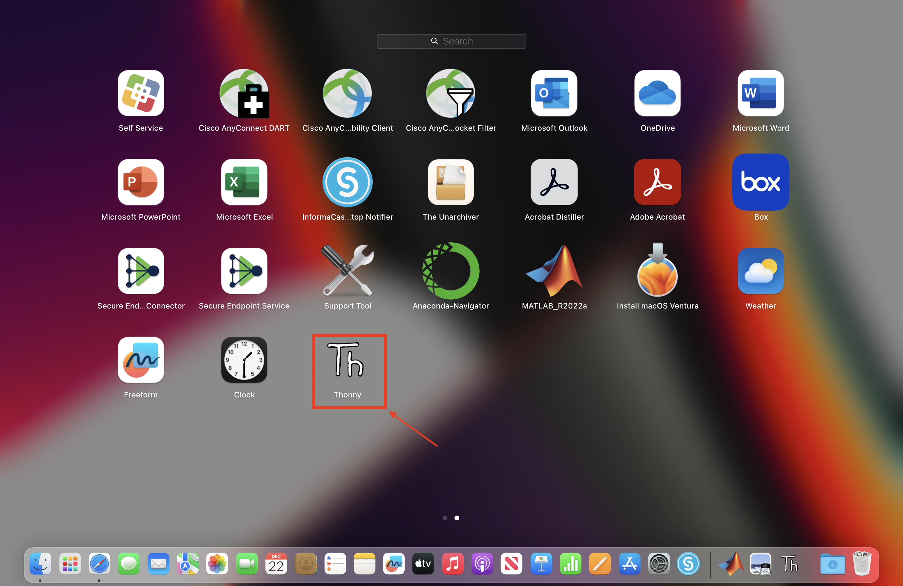
11. Initial Configuration
Use the dropdown menu to select default options. Click “Let’s go.”
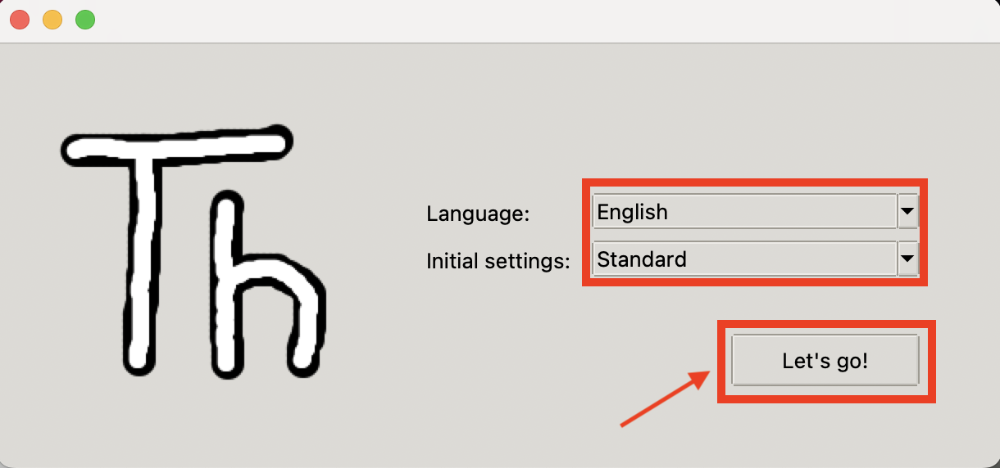
12. Verification
Confirm the successful installation by viewing the Thonny screen window.
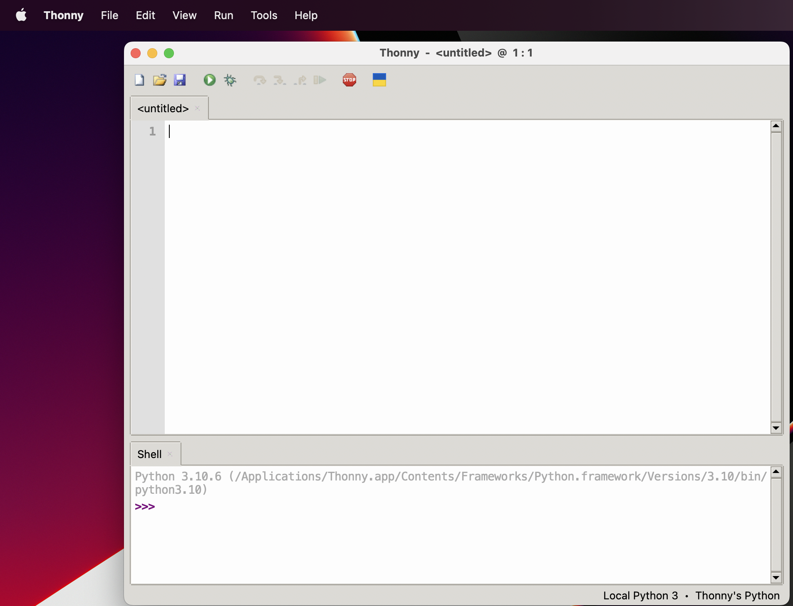
Conclusion
Congratulations! Thonny is now successfully installed on your macOS system.
Start coding with Thonny, and if you need more guidance, consult the official documentation at https://docs.thonny.org/.
For any issues or questions, feel free to seek assistance from the Thonny community or refer to the documentation for troubleshooting tips.